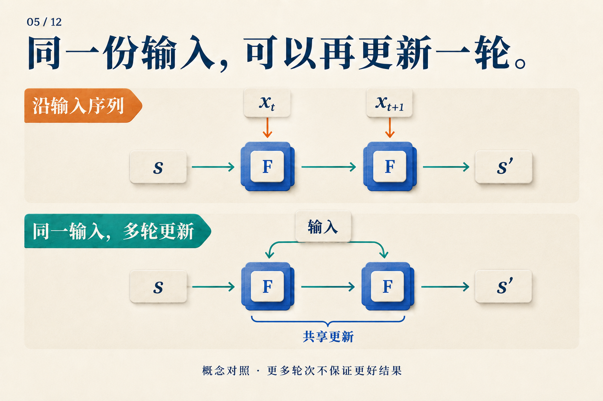
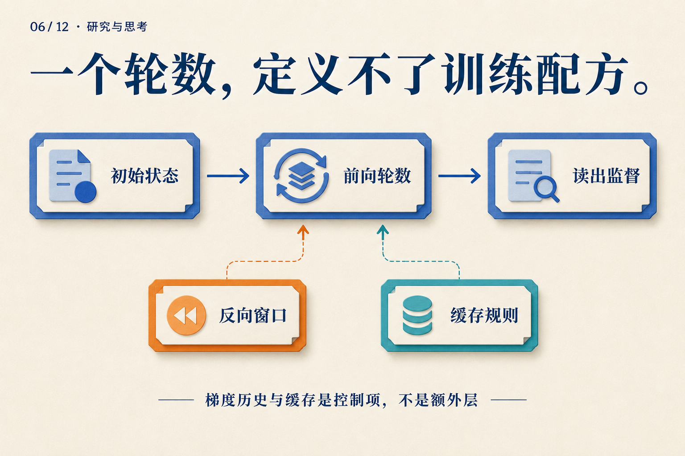
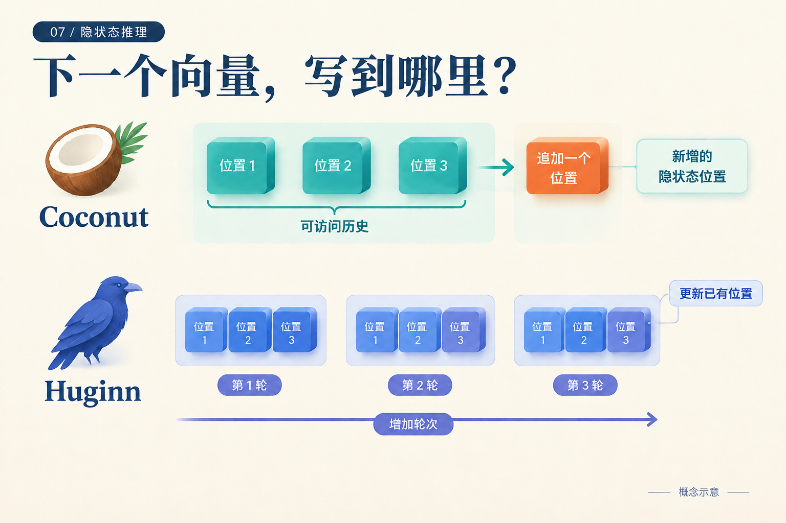
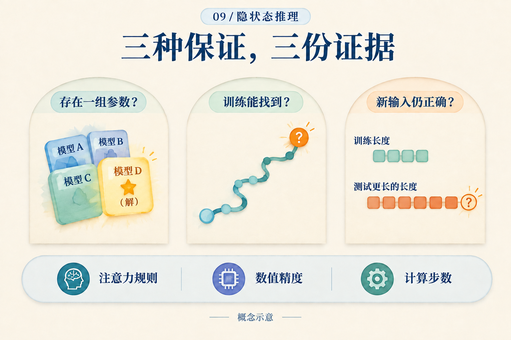
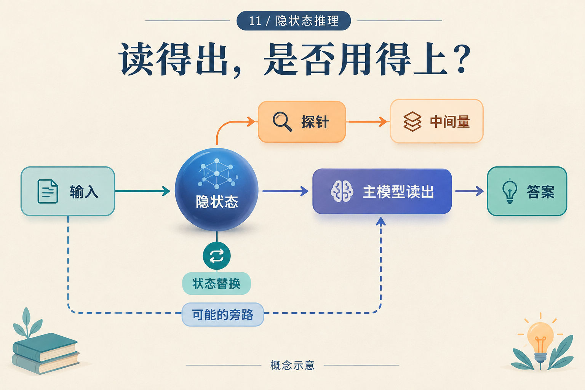

01 / 12

看到答案前，模型还做了什么？
What Happens Before a Model Gives Its Answer?
沿着同一道零件题的执行记录，分清词元反馈、连续反馈和深度循环：下一步拿什么，哪个模块重跑？
面向已了解 Transformer 的工程师与研究入门者。每篇从一个具体问题出发，沿计算路径解释机制，再讨论证据能支持什么。
Reasoning in hidden states, and Transformers that compute again. A bilingual series for engineers and research newcomers.
What Happens Before a Model Gives Its Answer?
沿着同一道零件题的执行记录，分清词元反馈、连续反馈和深度循环：下一步拿什么，哪个模块重跑？

Why Aren't Three Pause Tokens Three Reasoning Steps?
用两层Transformer、三个暂停位置和一张训练前缀表，解释已知输入为何不同于逐步生成的输入。

Where Does the Training Error Come From After We Remove the Steps?
从一道三步弹珠题出发，手算答案损失，标出课程保留的目标，再看教师状态与答案前对齐怎样提供监督。

How Does a Model Keep Computing Without Writing the Steps?
用一道两步算术题走过 Coconut 的连续反馈和训练课程，再看数学与逻辑任务中它获得了什么、还缺什么。

Why Run the Same Transformer Again?
手算0111加0001的并行进位，理解共享更新怎样接住中间状态，再看输入注入与循环架构的设计。

Four Forward Rounds, but Only Two Backward?
手算一个四轮循环，比较完整与截断梯度，再理解Huginn、Ouro和MoR怎样选择监督与缓存规则。

Where Does the Next Vector Go?
用地址表区分追加潜在位置与增加内部轮次，再手算PonderLM的词嵌入残差累积。

What if the Model Was Right One Round Ago?
从一条自造轨迹算出退出分布与期望轮数，区分阈值停机、随机退出和只能用于诊断的oracle。

What Does It Mean to Prove That a Model Can Compute?
从四位奇偶校验出发，分清存在正确参数、训练找到解与跨长度泛化，再读注意力和精度条件。

Eight Fewer Tokens: How Much Computation Did We Save?
用32U与28U的假想账单，逐项算出内部调用、验证器与训练回本，再讨论真实缓存和延迟。

You Decoded 36 from a Hidden State. What Comes Next?
从读出36走到移入40：保留受体减法，预测新的答案，并用同值、随机扰动和缓存对照追查因果作用。

An Experiment That Could Reject a Hidden-State Hypothesis
把模11的两道题写成完整反事实实验：算出9，冻结干预位置，设匹配对照与失败判决，再考虑外推。